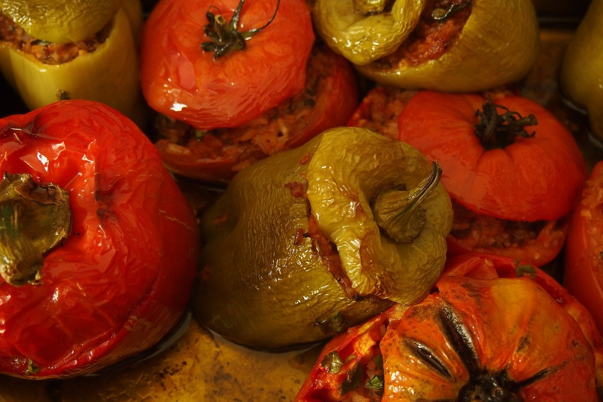

Gemista

Gemista Recipe
Gemista + feta go brrrrrr
Ingredients
- Πιπεριές φλωρίνης
- Ρύζι γλασσέ
- Πατάτες
- Κρεμμύδι
- Καρότο
- Σκόρδο
- Συμπικνωμένος πολτός ντομάτας
- Κύβος λαχανικών
- Λάδι
- Θυμάρι
- Ρίγανη
- Αλάτι/Πιπέρι
Steps
Preparation
- Ψιλοκόβουμε το κρεμμύδι, καρότο, σκόρδο
- Ανοίγουμε και καθαρίζουμε τις πιπεριές φλωρίνης
- Ξεφλουδίζουμε και κόβουμε τις πατάτες
Execution
- Σωτάρουμε τις πατάτες και τις βάζουμε στο ταψί
- Σωτάρουμε το κρεμμύδι, καρότο, σκόρδο
- Σωτάρουμε το ρύζι για λίγο
- Προσθέτουμε τον πολτό ντομάτας και σωτάρουμε
- Ρίχνουμε νερό και βράζουμε μέχρι να μαλακώσει το ρύζι και πιεί το νερό
- Γεμίζουμε με το μίγμα τις πιπεριές
- Τι αλλοίφουμε με λάδι και αλάτι
- Σκεπάζουμε το ταψί με αλουμινόχαρτο και ψήνουμε στους 180 για 40 λεπτά
- Βγάζουμε το αλουμινόχαρτο και ψήνουμε στους 200 για 5 λεπτά